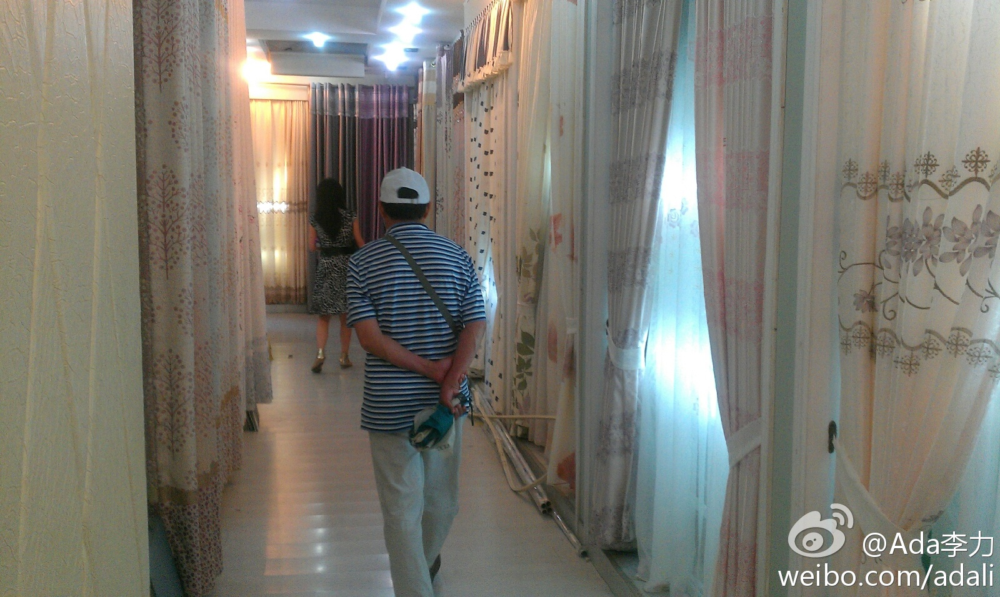

"阿里巴巴"另一种解释: "在马来西亚，那些由马来人担任领导，实际上却由华人管理的企业被称为阿里巴巴企业。阿里是马来人，巴巴是华人。- 《亚洲教父》

Ada李力
2012-06-26
Ada李力
2012-06-26
国内物价现在已经不便宜，妹妹去商场逛常常咋舌。不过还是有比美国便宜不少的东西，比如窗帘，前年妹妹背回去一层楼的窗帘，今年再接再厉，要把楼上卧室的窗帘也换掉。大概涉及定制，个性化方面的服务，中国还是有优势的。  上海·九星家具窗帘、布艺、家具小件一条街
上海·九星家具窗帘、布艺、家具小件一条街
- 

Ada李力
2012-06-26
妹妹在美国常常收看国内的"中华医药"节目，打电话时也经常告诉我们如何保养等等。这次回国特意买砭石和艾灸，给我们挨个做刮砂和灸。对中医的看法，我们家分歧就较大，大姐和妹妹很相信，爸爸觉得用也无妨，但不重视，我是反感中医，觉得这么多年，中医还是在伪科学和玄学中打转。